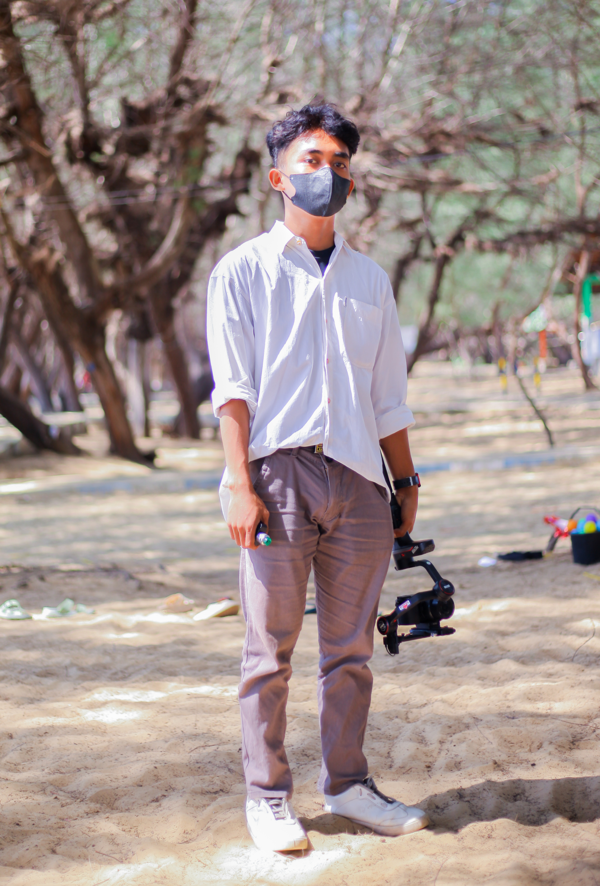

ABOUT AYANG
Ulfatul Laily namanya, dia sering dipanggil Ulfa namun kadang dipanggil Uung. Lahir pada perayaan kemerdekaan 17 agustus 2002. Dia bertempat tinggal di Lenteng Barat lebih tepatnya di dusun padanan. Dia sejak kecil tinggal bersama neneknya hingga dia menganggap beliau ibunya. Profesi dia sekarang tidak tentu tapi yang pasti dia mempunya profesi menjadi pacarnya si penulis
Pendidikan dia sekarang adalah Mahasiswa di kampus paling banyak masalah (STPKI....), namun dia sebentar lagi akan keluar dari kampus tersebut. Prestasi yang begitu banyak membuat dia dikenal dengan orang yang sangat pandai "katanya sih". Prestasi yang sering kali di capai yaitu Puisi, ia sangat pandai membuat puisi namun si penulis tidak mempercayai itu karna jarang dibuatkan puisi olehnya. Saat tengkar saja dibuatkan, nasib
Riko Febri Setiawan namanya, cowok ganteng yang disukai banyak orang, hehehe. Kerap di panggil Febri atau kadang dipanggil Riko. Lahir 01 April 2004, masih cukup muda di usia yang sekarang 19 tahun. Tinggal di desa kalimook yang sangat indah yang berada di kecamatan Kalianget
Pendidikan dia sekarang adalah Mahasiswa di kampus paling banyak masalah (STPKI....). semester 5 dan masih lama untuk lulus dan nikah. Kemampuan dan Prestasi yang begitu banyak dan memukau membuat dia disayang oleh pacarnya yaitu si ulfa.
Pendidikan dia sekarang adalah Mahasiswa di kampus paling banyak masalah (STPKI....), namun dia sebentar lagi akan keluar dari kampus tersebut. Prestasi yang begitu banyak membuat dia dikenal dengan orang yang sangat pandai "katanya sih". Prestasi yang sering kali di capai yaitu Puisi, ia sangat pandai membuat puisi namun si penulis tidak mempercayai itu karna jarang dibuatkan puisi olehnya. Saat tengkar saja dibuatkan, nasib
Riko Febri Setiawan namanya, cowok ganteng yang disukai banyak orang, hehehe. Kerap di panggil Febri atau kadang dipanggil Riko. Lahir 01 April 2004, masih cukup muda di usia yang sekarang 19 tahun. Tinggal di desa kalimook yang sangat indah yang berada di kecamatan Kalianget
Pendidikan dia sekarang adalah Mahasiswa di kampus paling banyak masalah (STPKI....). semester 5 dan masih lama untuk lulus dan nikah. Kemampuan dan Prestasi yang begitu banyak dan memukau membuat dia disayang oleh pacarnya yaitu si ulfa.

RIKO FEBRI SETIAWAN
ULFATUL LAILY